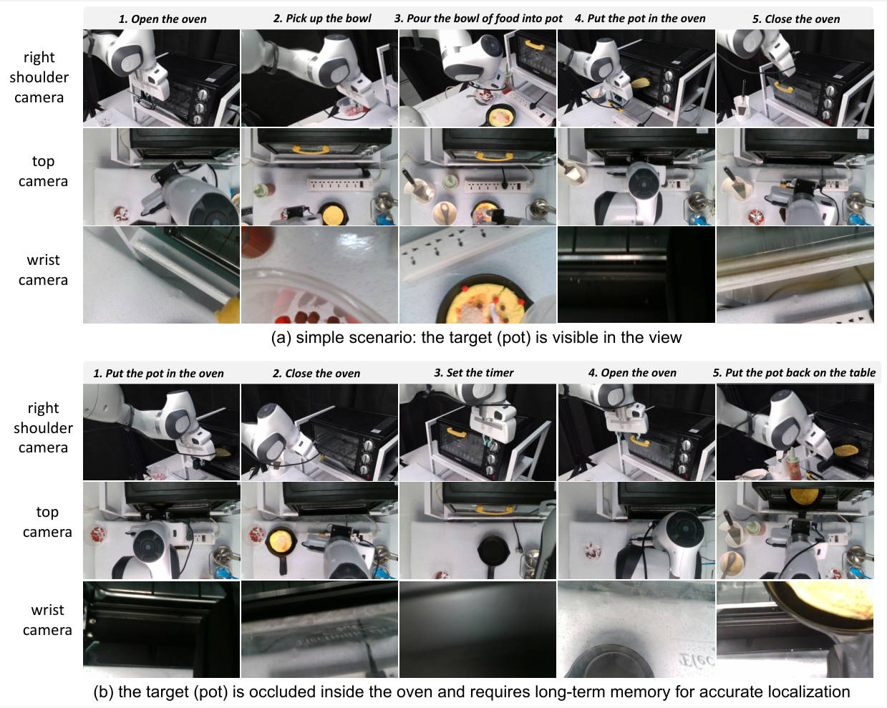

Abstract
Robotic manipulation often requires understanding long-horizon tasks guided by visual observations and language instructions. However, most existing Vision-Language-Action (VLA) models focus primarily on short-horizon tasks and overlook the rich historical video context, limiting their ability to perform complex, multi-step tasks. Moreover, these models often suffer from weak alignment between pre-trained vision-language embeddings and robotic actions, which hinders the effective extraction of action-relevant priors from visual input and leads to inaccurate action generation. In this paper, we propose a novel Long Horizon Latent Action Learning framework for general rObot manipulation, HALO, which enables robots to perform multi-step tasks by integrating long-term visual observations, multi-view camera images, and natural language instructions.
Model Architecture

HALO integrates a pretrained VLM, a state-aware latent re-representation module, and an action expert to generate multi-step robot actions.

The attention mechanism allows HALO to focus on relevant parts of the visual input while generating actions.
Key Contributions
- Supports long-horizon visual-linguistic context
- State-aware latent re-representation for cross-modal alignment
- 10B parameter scale trained on 1M+ robot episodes
- Outperforms RT-2-X and pi0 in both simulation and real-world
Experimental Results


HALO outperforms existing models like RT-2-X and pi0 in both simulation and real-world tasks, demonstrating superior long-horizon task performance.
Task Visualization

Example long-horizon task:
(a) Open the oven, pick up the bowl, pour the bowl of food into pot, put the pot in the oven and close the oven.
(b) Put the pot in the oven, close the oven, set the timer, open the oven and put the potbackon the table.